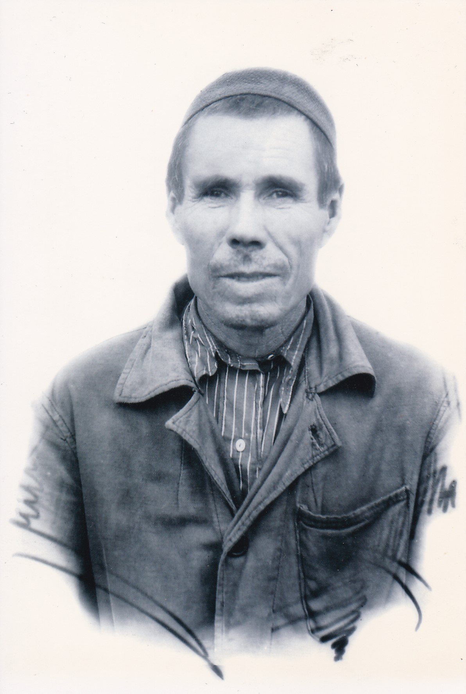

<!--META http-equiv="content-type" content="text/html; charset=windows-1252"-->
<!--meta http-equiv="content-type" content="text/html;charset=utf-8" />
<html>
<TITLE>Tarih</TITLE>
<H1>Тарих (история)</H1>

<i>Человек умирает не тогда, когда перестает биться его сердце, а тогда, когда о нем забывают те, кто его любили.</i>
<p>
<a href="https://ftk1000.github.io/etc/1984_Mila.jpg">Мила Нечаева</a> рассказала мне, как она разыскала
информацию о своих родственниках и указала на сайты (A) и (B), где хранятся архивные документы министерства обороны.

По этим сайтам мне удалось разыскать <A HREF="#MUSA_KHAFIZOV">инфорамацию о моём деде</A>.  
Во многих документах того времени он ипользовал только имя и фамилию, 
хотя  его полное имя Хафизов Муса Хафизович.
<br>

<ul>
<li>
По этим двум ссылкам можно найти документы о многих участниках ВОВ.<br>
(A) <A HREF="https://pamyat-naroda.ru/">https://pamyat-naroda.ru/</A> <br>
(B) <A HREF="http://podvignaroda.ru/?#tab=navPeople_search">http://podvignaroda.ru/</A> 
</li>
<p>

<li>
Эта ссылка содержит информацию о многих жертвах репрессий, но не только.
Есть информация о тех, кто пропал без вести, погиб в блокадном Ленинграде, или скончался по другим причинам.
<br>
(C) <A HREF="https://timenote.info/ru/person">https://timenote.info/ru/person</A> <br>
В частности, на этом сайте можно найти <A HREF="#NASIB_ISAKAEV">информацию о деде Олега</A>, которого звали Насиб Исакаев.
</li>
</ul>
 
 
 


<p>

<p>
<hr>
<p>
<div id="MUSA_KHAFIZOV">
<H3>МУСА ХАФИЗОВ</H3>
<br><br>

Хафизов Муса Хафизович КРАТКАЯ СПРАВКА:<br>
<p>
* 1903: Дата рождения: __.__.1903 <br>
* Июнь 1941: В Красной Армии с 28.06.1941  (см НАГРАДНОЙ ЛИСТ ниже).<br>
* Август 1941: Зачислен в команду №11 отправляемую на фронт 27.08.1941 (см Именной список из 160 человек).<br> 
- Место службы: 2 осб 28 осбр<br>
- Воинская часть: 2 отдельный стрелковый батальон (осб); 111 запасной стрелковый полк 31 запасной стрелковой дивизии;<br> 
- Воинское звание: красноармеец; рядовой <br>
* Декабрь 1941: Ранение 29.12.41<br>
* Март 1942: Ранение 28.03.42<br>
* Февраль 1943: Награждён Медалью «За отвагу» 25.02.1943 (Кто наградил: 28 осбр Западного фронта, полковник Кириллов) <br>
* Май 1943:  прибыл в военно-пересыльный пункт 206 зсп ЗапФ 19.05.1943. <br>
* Май 1943:  выбыл из воинской части (военно-пересыльный пункт 206 фзсп 26.05.1943). Выбыл 5А (??? возможно ещё одно ранение???) <br>
* Декабрь 1943: Выбыл из состава РККА по инвалидности: 03.12.1943 (Госпиталь: ЭГ 5412. Номер свидетельства: 12/172)<br>
<br>
<br>

<H3>Список некоторых документов из архивов </a></H3>

<ol>


<li> <a href="https://pamyat-naroda.ru/heroes/?csrf=3e752d1b0dbe4881c6ec571ada9333c4&last_name=%D0%A5%D0%B0%D1%84%D0%B8%D0%B7%D0%BE%D0%B2&first_name=%D0%9C%D1%83%D1%81%D0%B0&group=all&types=pamyat_commander:nagrady_nagrad_doc:nagrady_uchet_kartoteka:nagrady_ubilein_kartoteka:pdv_kart_in:pdv_kart_in_inostranec:pamyat_voenkomat:potery_vpp:pamyat_zsp_parts:kld_ran:kld_bolezn:kld_polit:kld_upk:kld_vmf:potery_doneseniya_o_poteryah:potery_gospitali:potery_utochenie_poter:potery_spiski_zahoroneniy:potery_voennoplen:potery_iskluchenie_iz_spiskov:potery_kartoteki:potery_rvk_extra:potery_isp_extra:same_doroga&page=1&grouppersons=1&static_hash=a8eeeed93df2e33794f1d06b09983585v1">  https://pamyat-naroda.ru/ Поиск по: Фамилия - Хафизов, Имя - Муса </a> </li> <br>

<li>
<a href="https://pamyat-naroda.ru/heroes/person-hero34568791/?backurl=%2Fheroes%2F%3Fcsrf%3D3e752d1b0dbe4881c6ec571ada9333c4%26last_name%3D%D0%A5%D0%B0%D1%84%D0%B8%D0%B7%D0%BE%D0%B2%26first_name%3D%D0%9C%D1%83%D1%81%D0%B0%26group%3Dall%26types%3Dpamyat_commander%3Anagrady_nagrad_doc%3Anagrady_uchet_kartoteka%3Anagrady_ubilein_kartoteka%3Apdv_kart_in%3Apdv_kart_in_inostranec%3Apamyat_voenkomat%3Apotery_vpp%3Apamyat_zsp_parts%3Akld_ran%3Akld_bolezn%3Akld_polit%3Akld_upk%3Akld_vmf%3Apotery_doneseniya_o_poteryah%3Apotery_gospitali%3Apotery_utochenie_poter%3Apotery_spiski_zahoroneniy%3Apotery_voennoplen%3Apotery_iskluchenie_iz_spiskov%3Apotery_kartoteki%3Apotery_rvk_extra%3Apotery_isp_extra%3Asame_doroga%26page%3D1%26grouppersons%3D1%26static_hash%3Da8eeeed93df2e33794f1d06b09983585v1&search_view_id=podvigchelovek_nagrazhdenie16808553"> Общая справка по результатам поиска  в https://pamyat-naroda.ru/. </a><br> 
Результаты поиска: Упоминается в 6 документах, включая награждение.
</li>
<br>


<li> <a href="https://pamyat-naroda.ru/heroes/memorial-chelovek_vpp1987068148/?backurl=%2Fheroes%2F%3Fcsrf%3D3e752d1b0dbe4881c6ec571ada9333c4%26last_name%3D%D0%A5%D0%B0%D1%84%D0%B8%D0%B7%D0%BE%D0%B2%26first_name%3D%D0%9C%D1%83%D1%81%D0%B0%26group%3Dall%26types%3Dpamyat_commander%3Anagrady_nagrad_doc%3Anagrady_uchet_kartoteka%3Anagrady_ubilein_kartoteka%3Apdv_kart_in%3Apdv_kart_in_inostranec%3Apamyat_voenkomat%3Apotery_vpp%3Apamyat_zsp_parts%3Akld_ran%3Akld_bolezn%3Akld_polit%3Akld_upk%3Akld_vmf%3Apotery_doneseniya_o_poteryah%3Apotery_gospitali%3Apotery_utochenie_poter%3Apotery_spiski_zahoroneniy%3Apotery_voennoplen%3Apotery_iskluchenie_iz_spiskov%3Apotery_kartoteki%3Apotery_rvk_extra%3Apotery_isp_extra%3Asame_doroga%26page%3D1%26grouppersons%3D1%26static_hash%3Da8eeeed93df2e33794f1d06b09983585v1&search_view_id=podvigchelovek_nagrazhdenie16808553">Именной список (160 человек) на команду №11, отправляемую Рыбно-Слободским райвоенкоматом 27 августа 1941.</a> <br>
Тип документа: военно-пересыльные пункты и запасные полки (стр 2 из 5)<br>
Военно-пересыльный пункт: 111 зсп<br>
<br>
Хафизов Муса указан по номером 60. Из нашей деревни, Большой Ошняк, в этом списке я нашёл троих: дед (60), Хайруллин Зинатулла (139), Садрутдинов Габдулляз (148).<br>
<br>
Информация об архиве - <br>
Источник информации: ЦАМО<br>
Фонд ист. информации: 8396<br>
Опись ист. информации: 102973с<br>
Дело ист. информации: 2<br>
 </li> <br>
 
 
 
 

<li> <a href="https://pamyat-naroda.ru/heroes/memorial-chelovek_vpp1988430062/?backurl=%2Fheroes%2F%3Fcsrf%3D3e752d1b0dbe4881c6ec571ada9333c4%26last_name%3D%D0%A5%D0%B0%D1%84%D0%B8%D0%B7%D0%BE%D0%B2%26first_name%3D%D0%9C%D1%83%D1%81%D0%B0%26group%3Dall%26types%3Dpamyat_commander%3Anagrady_nagrad_doc%3Anagrady_uchet_kartoteka%3Anagrady_ubilein_kartoteka%3Apdv_kart_in%3Apdv_kart_in_inostranec%3Apamyat_voenkomat%3Apotery_vpp%3Apamyat_zsp_parts%3Akld_ran%3Akld_bolezn%3Akld_polit%3Akld_upk%3Akld_vmf%3Apotery_doneseniya_o_poteryah%3Apotery_gospitali%3Apotery_utochenie_poter%3Apotery_spiski_zahoroneniy%3Apotery_voennoplen%3Apotery_iskluchenie_iz_spiskov%3Apotery_kartoteki%3Apotery_rvk_extra%3Apotery_isp_extra%3Asame_doroga%26page%3D1%26grouppersons%3D1%26static_hash%3Da8eeeed93df2e33794f1d06b09983585v1&search_view_id=podvigchelovek_nagrazhdenie16808553">
Список  (54?) бойцов 5 стрелковой роты переданных в другую часть.</a> <br>
Муса Хафизов указан последним на первой странице (стр 1 из 2)<br>
Военно-пересыльный пункт: 111 зсп<br>

Информация об архиве - <br>
Источник информации: ЦАМО<br>
Фонд ист. информации: 8396<br>
Опись ист. информации: 102973с<br>
Дело ист. информации: 3<br>
 </li> <br>
 
 
 
 


<li> <a href="http://podvignaroda.ru/?#id=16808542&tab=navDetailDocument"> 
НАГРАДНОЙ ЛИСТ (см стр 22/43) </a> <br>
В этом документе сообщается краткая информация о деде (включая два ранения) и 
"краткое, конкретное изложение личного боевого подвига или заслуг"<br>
Обоснование: 
<a href="http://podvignaroda.ru/?#id=16808553&tab=navDetailManAward">
18 февраля в 5:00 группа разведки противника в количестве 10 человек, пользуясь рельефом местности (лощина и 
заросли кустарника) подошла на расстояние до 50 мт к переднему краю обороны роты, но своевременно была замечена стоявшим на посту красноармейцем Хафизовым.<br>
Когда нашим огнём отход был отрезан, Хафизов с группой бойцов подполз к раненным немцам и захватил в плен 3 солдат с оружием.</a> <br>
За проявленную бдительность и смелость достоин награждения медалью "ЗА БОЕВЫЕ ЗАСЛУГИ". <br>
Подпись: Капитан  (подпись неразборчиво), нач (неразборчиво) Санбаев.<br>
18 февраля 1943 г.<br>
Заключение вышестоящих начальников: Награждаю медалью "ЗА ОТВАГУ".<br>
Командир 28-й Особ Стрелк Бат полковник Кириллов <br>
25 февраля 1943 г.<br>
<br>

<a href="http://podvignaroda.ru/?#id=16808553&tab=navDetailManAward">
В НАГРАДНОМ ЛИСТЕ</a>  так же указано следующее:<br>
- ранен 2 раза: 29.12.41 г и 28.03.42 г <br>
- С какого времени в Красной Армии: 28.06.1941<br>
- должность, часть: стрелок 1 роты 2 отд стр б-на 28 отд стр бригада<br>
- чем ранее награждён: не награждался<br>

</li> <br>


<li> <a href="http://podvignaroda.ru/?#id=16808542&tab=navDetailDocument"> Приказ №011 
о награждении медалью за отвагу от 25 февраля 1943 года.</a> <br>
28 отдельная стрелковая бригада 5 армии Западного фронта, Действующая Красная Армия.<br>  
"От имени Президиума Верховного Совета Союза ССР, за образцовое выполнение боевых заданий Командования на фронте борьбы с немецкими захватчиками и проявленные при этом доблесть и мужество НАГРАЖДАЮ красноармейца ХАФИЗОВА МУСА, стрелка 1-ой стрелковой роты 2-го Отдельного Стрелкового Батальона медалью "ЗА ОТВАГУ". Командир отдельной стрелковой бригады И.К.Кириллов.
 </li> <br>


СПРАВКА о вышеуказанных медалях: 
<a href="https://ru.wikipedia.org/wiki/%D0%A1%D0%BF%D0%B8%D1%81%D0%BE%D0%BA_%D0%BC%D0%B5%D0%B4%D0%B0%D0%BB%D0%B5%D0%B9_%D0%A1%D0%A1%D0%A1%D0%A0"> Первые боевые медали «За отвагу» и «За боевые заслуги» </a>
были учреждены 17 октября 1938 года для награждения участников боёв у озера Хасан.<br>

Медаль «За отвагу» — государственная награда СССР для награждения за личное мужество и отвагу, проявленные при защите Отечества и исполнении воинского долга.<br>

Меда́ль «За боевы́е заслу́ги» — государственная награда СССР для награждения за умелые, инициативные и смелые действия, сопряженные с риском для жизни, содействующие успеху боевых действий с врагами Советского государства.
<br>
<br>


<li> <a href="https://pamyat-naroda.ru/heroes/kld-card_bolezn108405157/?backurl=%2Fheroes%2F%3Fcsrf%3D3e752d1b0dbe4881c6ec571ada9333c4%26last_name%3D%D0%A5%D0%B0%D1%84%D0%B8%D0%B7%D0%BE%D0%B2%26first_name%3D%D0%9C%D1%83%D1%81%D0%B0%26group%3Dall%26types%3Dpamyat_commander%3Anagrady_nagrad_doc%3Anagrady_uchet_kartoteka%3Anagrady_ubilein_kartoteka%3Apdv_kart_in%3Apdv_kart_in_inostranec%3Apamyat_voenkomat%3Apotery_vpp%3Apamyat_zsp_parts%3Akld_ran%3Akld_bolezn%3Akld_polit%3Akld_upk%3Akld_vmf%3Apotery_doneseniya_o_poteryah%3Apotery_gospitali%3Apotery_utochenie_poter%3Apotery_spiski_zahoroneniy%3Apotery_voennoplen%3Apotery_iskluchenie_iz_spiskov%3Apotery_kartoteki%3Apotery_rvk_extra%3Apotery_isp_extra%3Asame_doroga%26page%3D1%26grouppersons%3D1&&static_hash=a8eeeed93df2e33794f1d06b09983585v1"> Свидетельства о болезни (из "КАРТОТЕКА РАНЕНИЙ")  </a>  <br>
Хафизов Муса<br>
Дата рождения: __.__.1903<br>
Дата и место призыва: __.__.1942 Рыбно-Слободский РВК, Татарская АССР, Рыбно-Слободский р-н<br<br>>
Воинское звание: красноармеец<br>
Воинская часть: 1160 сп<br>
Судьба: Не годен<br>
Дата выбытия: 03.12.1943<br>
Госпиталь: ЭГ 5412<br>
Номер свидетельства: 12/172<br>
Дата свидетельства: 03.12.1943<br>
Информация об архиве -<br>
Источник информации: Филиал ЦАМО (военно-медицинских документов)<br>
Раздел: Свидетельства о болезни<br>
Название фонда: Картотека ранений<br>
</li>

<br>


<li> <a href="https://pamyat-naroda.ru/heroes/podvig-nagrada_kartoteka1105940844/?backurl=%2Fheroes%2F%3Fcsrf%3D3e752d1b0dbe4881c6ec571ada9333c4%26last_name%3D%D0%A5%D0%B0%D1%84%D0%B8%D0%B7%D0%BE%D0%B2%26first_name%3D%D0%9C%D1%83%D1%81%D0%B0%26group%3Dall%26types%3Dpamyat_commander%3Anagrady_nagrad_doc%3Anagrady_uchet_kartoteka%3Anagrady_ubilein_kartoteka%3Apdv_kart_in%3Apdv_kart_in_inostranec%3Apamyat_voenkomat%3Apotery_vpp%3Apamyat_zsp_parts%3Akld_ran%3Akld_bolezn%3Akld_polit%3Akld_upk%3Akld_vmf%3Apotery_doneseniya_o_poteryah%3Apotery_gospitali%3Apotery_utochenie_poter%3Apotery_spiski_zahoroneniy%3Apotery_voennoplen%3Apotery_iskluchenie_iz_spiskov%3Apotery_kartoteki%3Apotery_rvk_extra%3Apotery_isp_extra%3Asame_doroga%26page%3D1%26grouppersons%3D1%26static_hash%3Da8eeeed93df2e33794f1d06b09983585v1&search_view_id=podvigchelovek_nagrazhdenie16808553"> Медаль «За отвагу» </a>  <br>
Хафизов Муса<br>
Наградной документ<br>
Дата рождения: __.__.1903<br>
Воинское звание: красноармеец<br>
Кто наградил: 28 осбр Западного фронта<br>
Наименование награды: Медаль «За отвагу»<br>
Номер документа: 4<br>
Дата документа: 25.02.1943<br>
Информация об архиве -<br>
Архив: ЦАМО<br>
Картотека: Картотека награждений<br>
Расположение документа: шкаф 93, ящик 3<br>
</li>
<br>


 
<li> <a href="https://pamyat-naroda.ru/heroes/memorial-chelovek_vpp1995770506/?backurl=%2Fheroes%2F%3Fcsrf%3D3e752d1b0dbe4881c6ec571ada9333c4%26last_name%3D%D0%A5%D0%B0%D1%84%D0%B8%D0%B7%D0%BE%D0%B2%26first_name%3D%D0%9C%D1%83%D1%81%D0%B0%26group%3Dall%26types%3Dpamyat_commander%3Anagrady_nagrad_doc%3Anagrady_uchet_kartoteka%3Anagrady_ubilein_kartoteka%3Apdv_kart_in%3Apdv_kart_in_inostranec%3Apamyat_voenkomat%3Apotery_vpp%3Apamyat_zsp_parts%3Akld_ran%3Akld_bolezn%3Akld_polit%3Akld_upk%3Akld_vmf%3Apotery_doneseniya_o_poteryah%3Apotery_gospitali%3Apotery_utochenie_poter%3Apotery_spiski_zahoroneniy%3Apotery_voennoplen%3Apotery_iskluchenie_iz_spiskov%3Apotery_kartoteki%3Apotery_rvk_extra%3Apotery_isp_extra%3Asame_doroga%26page%3D1%26grouppersons%3D1%26static_hash%3Da8eeeed93df2e33794f1d06b09983585v1&"> Имя упомянуто в списке из "ввп и зп" (Военно-полевые пункты и запасные полки) </a>  <br>
" ... Хафизов Муса ..." стр 274 из 314 <br>
Военно-пересыльный пункт: 206 зсп ЗапФ<br>
Прибыл в часть: 19.05.1943<br>
Информация об архиве -<br>
Источник информации: ЦАМО<br>
Фонд ист. информации: 8502<br>
Опись ист. информации: 267586<br>
Дело ист. информации: 7<br>
</li>
<br>


<li> <a href="https://pamyat-naroda.ru/heroes/memorial-chelovek_vpp1994619969/?backurl=%2Fheroes%2F%3Fcsrf%3D3e752d1b0dbe4881c6ec571ada9333c4%26last_name%3D%D0%A5%D0%B0%D1%84%D0%B8%D0%B7%D0%BE%D0%B2%26first_name%3D%D0%9C%D1%83%D1%81%D0%B0%26group%3Dall%26types%3Dpamyat_commander%3Anagrady_nagrad_doc%3Anagrady_uchet_kartoteka%3Anagrady_ubilein_kartoteka%3Apdv_kart_in%3Apdv_kart_in_inostranec%3Apamyat_voenkomat%3Apotery_vpp%3Apamyat_zsp_parts%3Akld_ran%3Akld_bolezn%3Akld_polit%3Akld_upk%3Akld_vmf%3Apotery_doneseniya_o_poteryah%3Apotery_gospitali%3Apotery_utochenie_poter%3Apotery_spiski_zahoroneniy%3Apotery_voennoplen%3Apotery_iskluchenie_iz_spiskov%3Apotery_kartoteki%3Apotery_rvk_extra%3Apotery_isp_extra%3Asame_doroga%26page%3D2%26grouppersons%3D1%26static_hash%3Da8eeeed93df2e33794f1d06b09983585v1&"> Запись (832-я строка в списке) в документе "Военно-полевые пункты и запасные полки" 26 мая 1943 года.</a> <br>
Хафизов. Муса<br>
Военно-пересыльный пункт: 206 фзсп<br>
Выбытие из воинской части: 26.05.1943<br>
Куда выбыл: 5 А<br>
Информация об архиве:<br>
Источник информации: ЦАМО<br>
Фонд ист. информации: 8502<br>
Опись ист. информации: 267586<br>
Дело ист. информации: 8<br>
</li>
 <br>


</ol>
</div>


<div id="NASIB_ISAKAEV">
<H3>НАСИП ИСАКАЕВ</H3>

<ol>


<li> <a href="https://pamyat-naroda.ru/heroes/memorial-chelovek_dopolnitelnoe_donesenie57601808/?static_hash=941f1694cd7b4a960af5691572095c9bv1">  Документ уточняющий потери</a>  <br>
Искаев Носип Жаипович<br>
Дата рождения: __.__.1915<br>
Место рождения: Курганская обл., Альменевский р-н, д. Чекулева<br>
Место призыва: __.__.1941 Ярославский РВК<br>
Дата призыва: __.__.1941<br>
Воинское звание: мл. командир<br>
Дата выбытия: __.05.1945<br>
Причина выбытия: пропал без вести<br>
</li>


<li> <a href="https://timenote.info/ru/person/view?id=2070862&dlang=ru">  Насиб Исакаев: </a> <br>
Родился в 1914 г., Челябинская обл., Ялано-Катайский р-н, д. Учкулево; татарин; <br>
военнослужащий.. <br>
Проживал: Альменевский р-н. <br>
Арестован: 15 апреля 1943 г. <br>
Приговорен: ОС НКВД СССР 25 сентября 1943 г., обв.: ст.58-1б.. <br>
Приговор: к 5 г. лишения свободы. <br>
Реабилитирован 29 апреля 1993 г. Военной прокуратурой МВО <br>
Источник: Книга памяти Курганской обл. <br>
</li> 


<li> <a href="">  </a> </li> <br>


<li> <a href="">  </a> </li> <br>

</ol>
</div>


<A HREF=""> </A> |<br>
<A HREF=""></A> |<br-->
